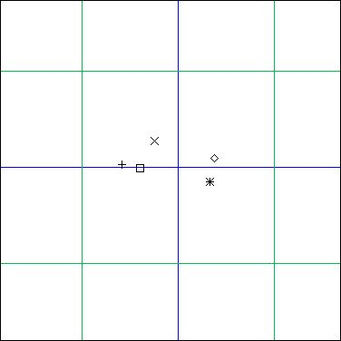
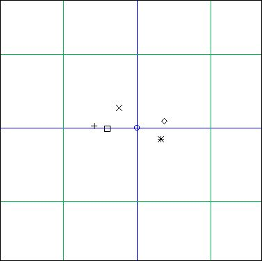
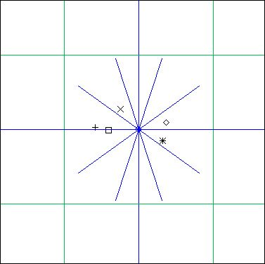

GeoMaestro
Tutorial 1: basics
We will suppose you have started the graphic tool and have a console window available. Click on "new" to initialise the event scene, and on "grid" twice to have axes and loose grid on.
Using the mouse mode "new event", click in the scene somewhere in the green square around the origin, and enter 'a'#1 in the pop-up window. Repeat this with 'b'#2 , then 'c'#3 , then 'd'#4 and finally 'e'#5
You should have something like that in your window now (use "zoom in" and "zoom out" to adjust the view):

We're going to generate a projection using the Helice() projector. To define the rotation center point, we can either use the console and type Or = xyd(0,0) or use the "new point" mouse mode. If you do so, click around the center and enter Or as the name of the defined point. If you wanted this point to be exactly the center (x=0, y=0) you would have clicked on the "snap" button before... but it's not to late ! you can select it (it should now be a blue circle), click on "operation" and type X_=0 ; Y_=0
If you defined Or with the console, you won't see it in the GUI. To see it, click on "display" and type Or. That's it !
Now you should have this:

Now, click on the small "pj" button to set the GUI in projection mode. The "PROJECTORS" button is a menu: select the item "Helice", then click in the array button just beside.
A pop-up window appears with the prompt: "Args >", and at the same time in the console you have a message describing which arguments the projector is waiting for. So enter Or, 1, 0, 0.2*Pi, 1 at the promp.
What happens now is that the tool is calculating the projection Helice(Or, 1, 0, 0.2*Pi, 1) and storing the resulting line in the second menu button, just below the projectors one.
You should see "1: Helice(Or, 1,..." on this button.
To hear the result, click on "hear" (of course you must have some sound device connected to your MIDI out port).
To see the segments used by Helice for the projections, click on "display" and type £1. You should have this in your GUI:

The new blue lines we have are the segments Helice() used as parameters for Ecoute(). The five events have been projected in the first one (the horizontal one), so a MIDI phrase of length 2*CPCM (that is 2 seconds, if you didn't change CPCM) has been rendered, then on the second one, giving a new phase that have been added to the first one, etc.. we have ten segments but you only see five of them in the graphic tool since we used a step of 0.2*Pi, so there's an overlapping. The total music duration is then 20 seconds
To visualize the projections, click on the "proj" button
Now you may want to export what you just made as a MIDI file: click on the small arrow button (the one beside the "Ex" button). You will be asked if you want to export this ligne to a variable. No, so just press RETURN. Now you're asked if you want to copy the phrase to a variable. No, so press RETURN again. At last you're asked if you want to write a MIDI file. Yes, so enter the name of the file and press RETURN.
(here is the one I got doing this tutorial: tut.mid )
-- Back to the tutorials index--
-- Back --